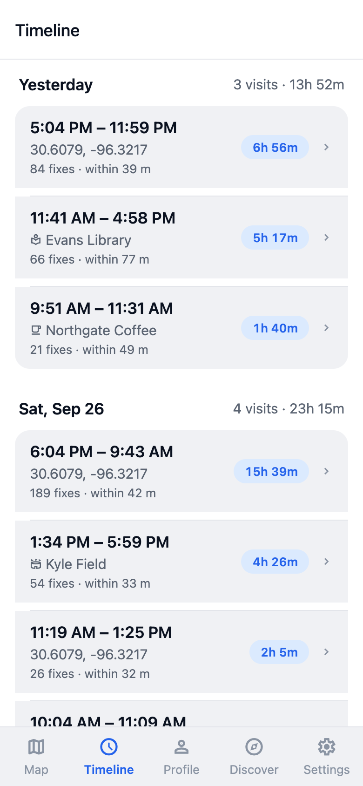
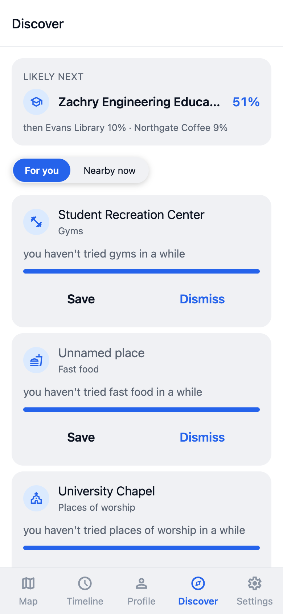
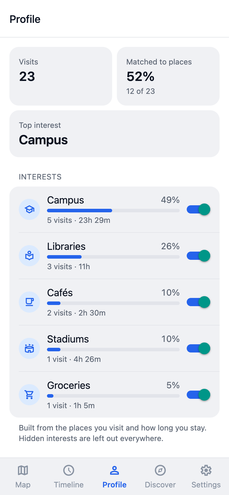
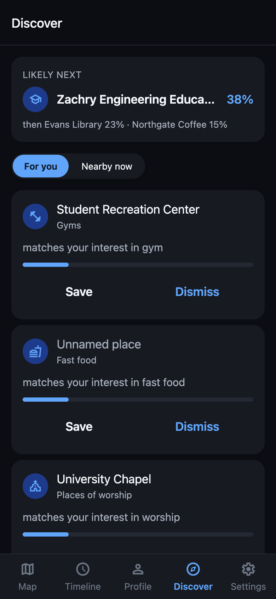
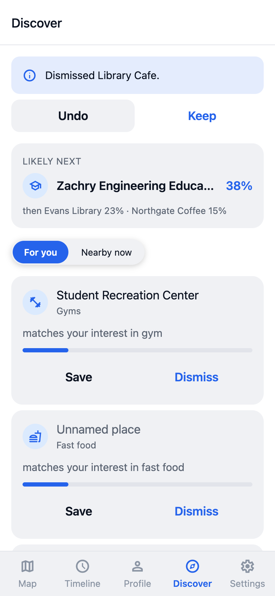
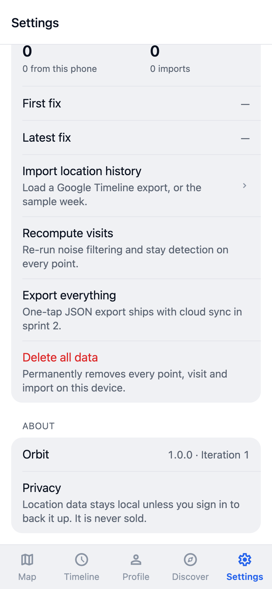

Orbit records your location history on your own phone, turns it into visits, and matches those visits to real places. This week finished Iteration 2: the app now suggests places to try and predicts where you are likely to go next.
Part 2 is built and merged. Six pull requests went into main, and the whole stack runs together.
GET /recommendations and /recommendations/nearby return suggestions with a one-line reason each; GET /predict/next returns the three most likely next places. Saving or dismissing a suggestion is remembered, and a dismissed place never comes back.main.All numbers are from George’s harnesses on synthetic data (cd backend && python -m evaluation.places | recommend | predict). Synthetic data is tidier than real life, so these are optimistic.
| What | Ours | Baseline | Reading |
|---|---|---|---|
| Place resolution (top-1) | 100% | 88.9% nearest place | Fixes what distance alone gets wrong |
| Place resolution (precision) | 97.1% | 83.8% | Assigns fewer visits, right when it does |
| Next place (top-1) | 84.9% | 16.0% most-frequent | Time of day does most of the work |
| Next place (top-3) | 89.2% | 61.8% | |
| Recommendations, new places (hit@10) | 15.8% | 18.4% popularity | Below the bar |
| Recommendations (MRR) | 8.0% | 5.5% | When right, ranked higher |
| Recommendations (catalog covered) | 30.5% | 15.0% | Twice as many different places |
The recommender does not yet clear the popularity baseline, which is this iteration’s exit criterion. It is 2.6 points behind at k=10. The reason is visible in the other two rows: it deliberately spreads suggestions across categories and places, which costs hit-rate against a baseline that just names the most popular places over and over. Roger has the tuning knobs for that trade-off, and the harness now reports it on every run, so next week’s job is to find the setting that keeps the variety and clears the bar.
docs/eval/labeling-protocol.md), so we can report real accuracy instead of synthetic. docs/eval/results.md is waiting with every number marked TODO.v0.5 beta is feature-complete in the app: profile, recommendations and predictions are all live. What is left is evidence, not code: the recommender over the baseline, real hand-labeled accuracy, and a battery measurement. Iteration 3 is then about owning your data end to end.





